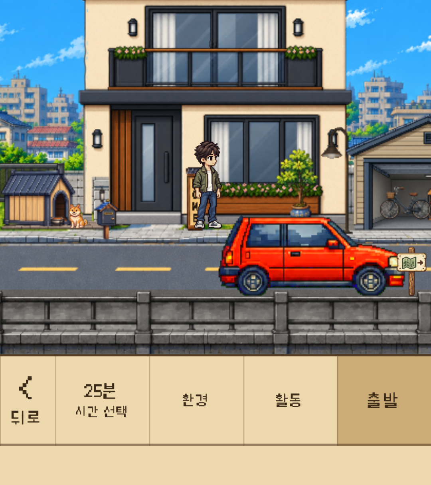
시간 설정 → 출발
Home에서 드라이브 메뉴를 열고 집중 시간을 선택한 뒤 출발합니다.
취재와 콘텐츠 제작을 위한 공식 자료
Dayroad는 공부·독서·작업에 집중할 시간을 따로 만들고 싶은 사람을 위한 iPhone 집중 타이머입니다. 시간을 정하고 출발하면 차는 픽셀 도시를 달리고, 사용자는 자신의 일에 몰입합니다. 누적된 집중 시간으로 스탬프를 얻고 직접 Home을 성장시킵니다.
지원 기기와 자세한 호환 정보는 App Store에서 확인해 주세요.
할 일을 앞에 두고도 시작이 어렵거나 다른 앱으로 손이 갈 때. 한 번의 집중 시간을 정하고, 그 시간에는 공부·독서·작업에 머무르도록 설계했습니다.

Home에서 드라이브 메뉴를 열고 집중 시간을 선택한 뒤 출발합니다.
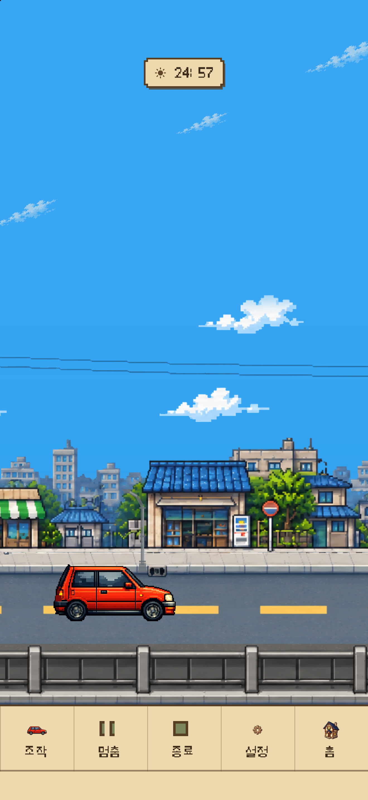
타이머가 흐르는 동안 차가 자동으로 달립니다. 운전 조작 없이 자신의 일에 집중합니다.
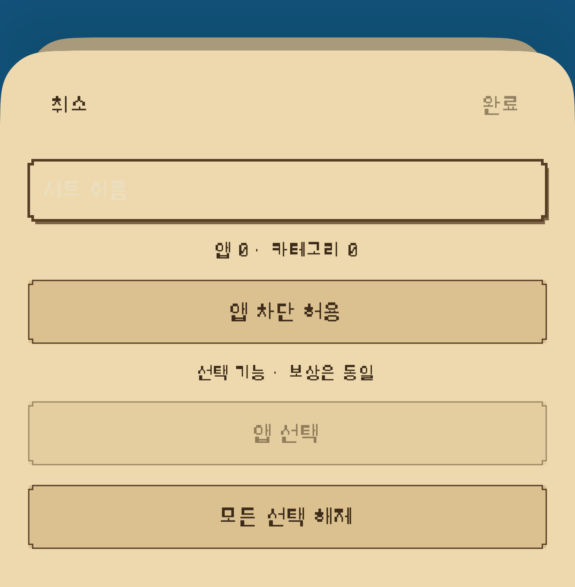
선택한 앱·카테고리를 차단하는 선택 기능입니다. 스크린 타임 권한이 필요합니다.
자동차를 직접 조작할 필요 없이, 정해 둔 시간만큼 자신의 일에 집중합니다. 옆에서 본 거리와 위에서 본 주행, 맑은 낮과 비 오는 저녁의 풍경이 같은 시간을 다르게 채웁니다.
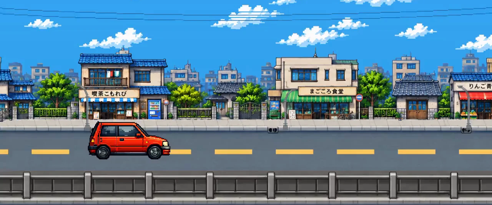
01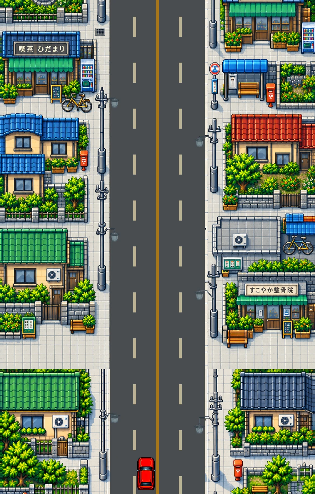
02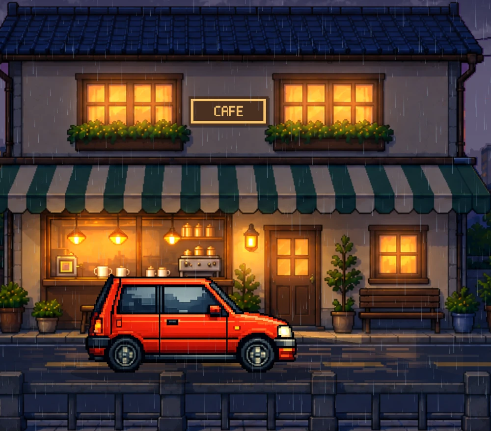
03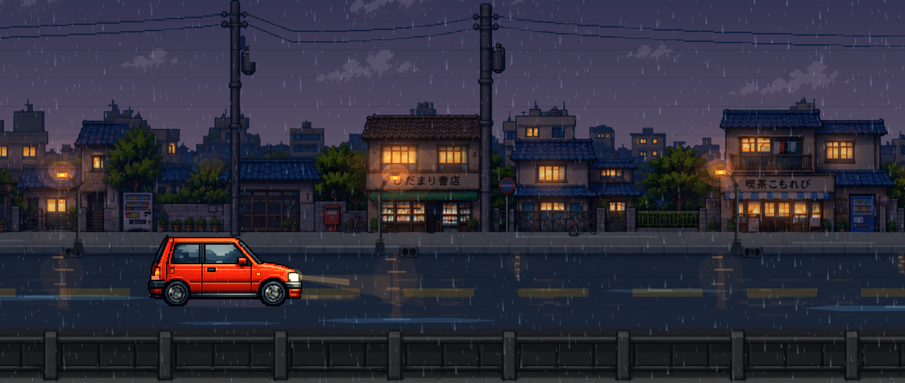
픽셀로 그린 거리, 흐르는 풍경과 음악. Dayroad는 집중하는 시간에도 잠시 쉬어가는 시간에도 차분한 배경이 되어 줍니다.
집중 완료 후 누적 25분마다 스탬프 1개. 필요한 수를 모으면 Home에서 직접 사용해 다음 단계를 엽니다. 성장은 자동으로 진행되지 않습니다.
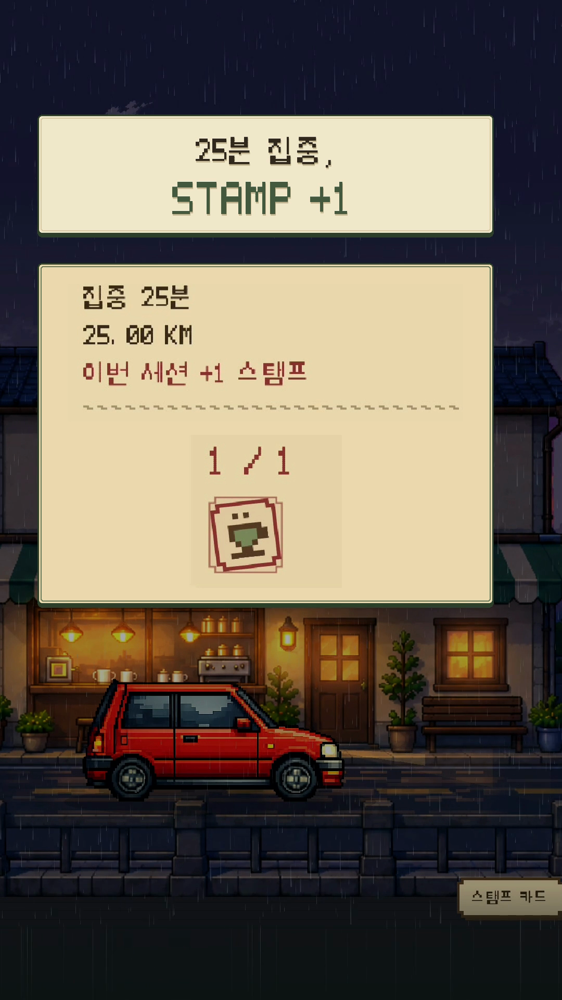
실제 25분 완료 보상 화면입니다. 누적 집중 25분당 스탬프 1개가 지급됩니다.
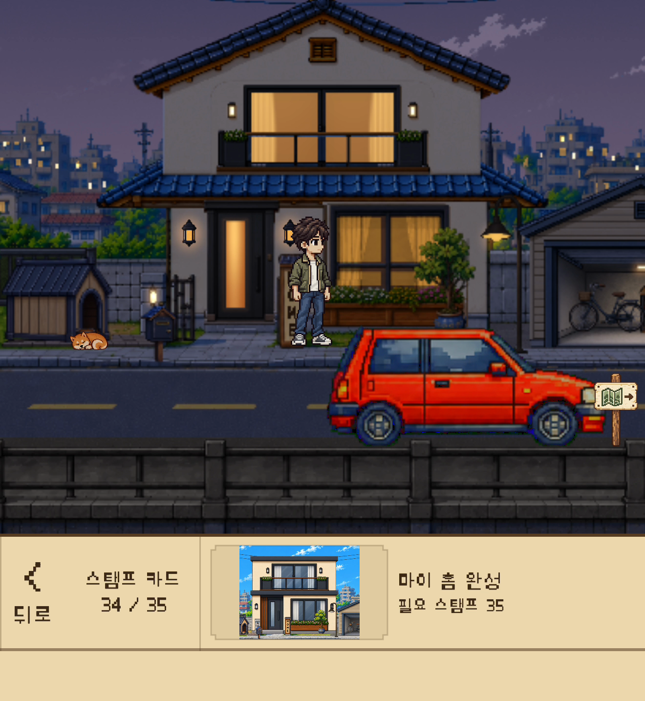
Home의 다음 단계에 필요한 스탬프를 모아 직접 선택해 해금합니다.
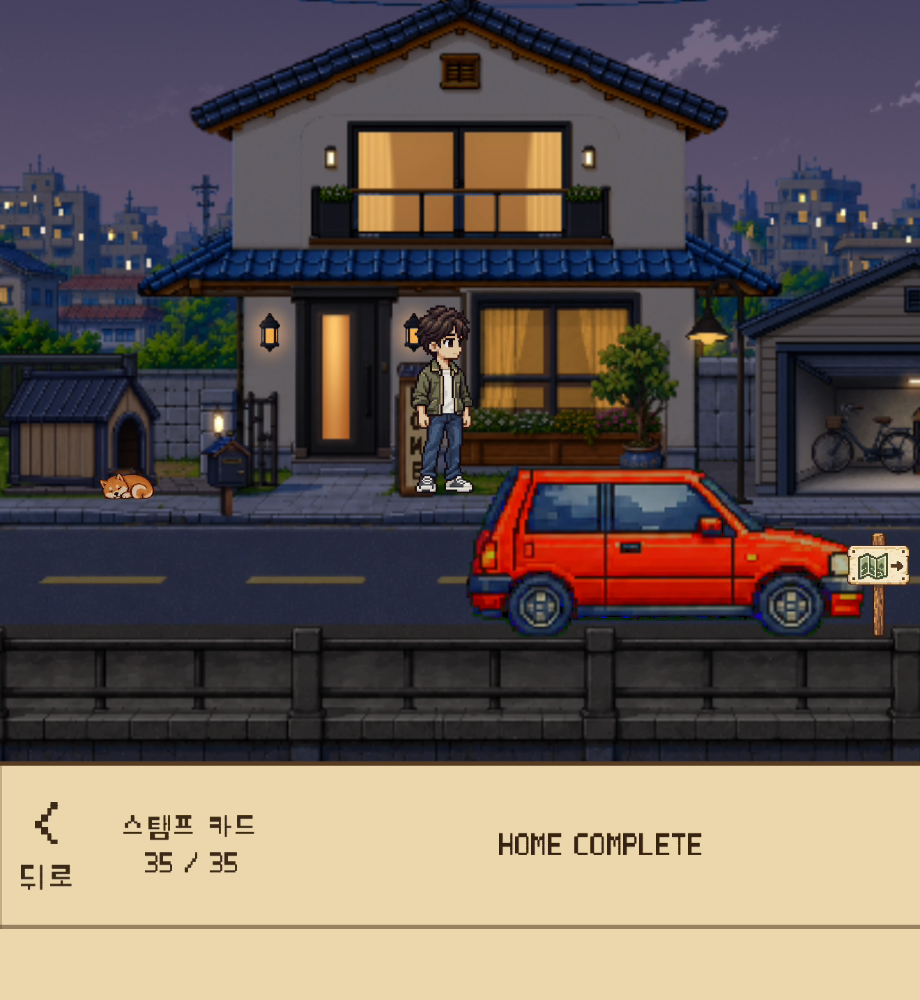
35단계까지 변하는 나만의 집이 다음 집중을 시작할 작은 목표가 되도록 설계했습니다.
집중 → 드라이브 → 완료·스탬프 → 직접 해금 → Home 성장 → 다음 집중
집중한 시간이 눈에 보이는 변화로 남고, 다음 성장을 기대하며 다시 집중을 시작할 작은 동기가 되도록 설계했습니다.
누적 집중 25분마다 스탬프 1개를 얻습니다. 필요한 스탬프를 모아 사용하면 Home의 다음 단계를 열 수 있습니다. 작은 시작에서 35단계까지, 집중의 흔적이 눈에 보이는 변화로 남습니다.
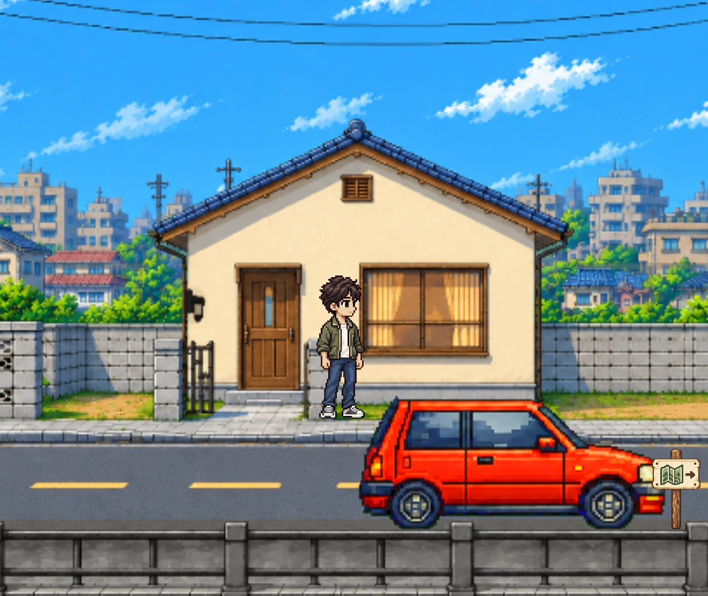
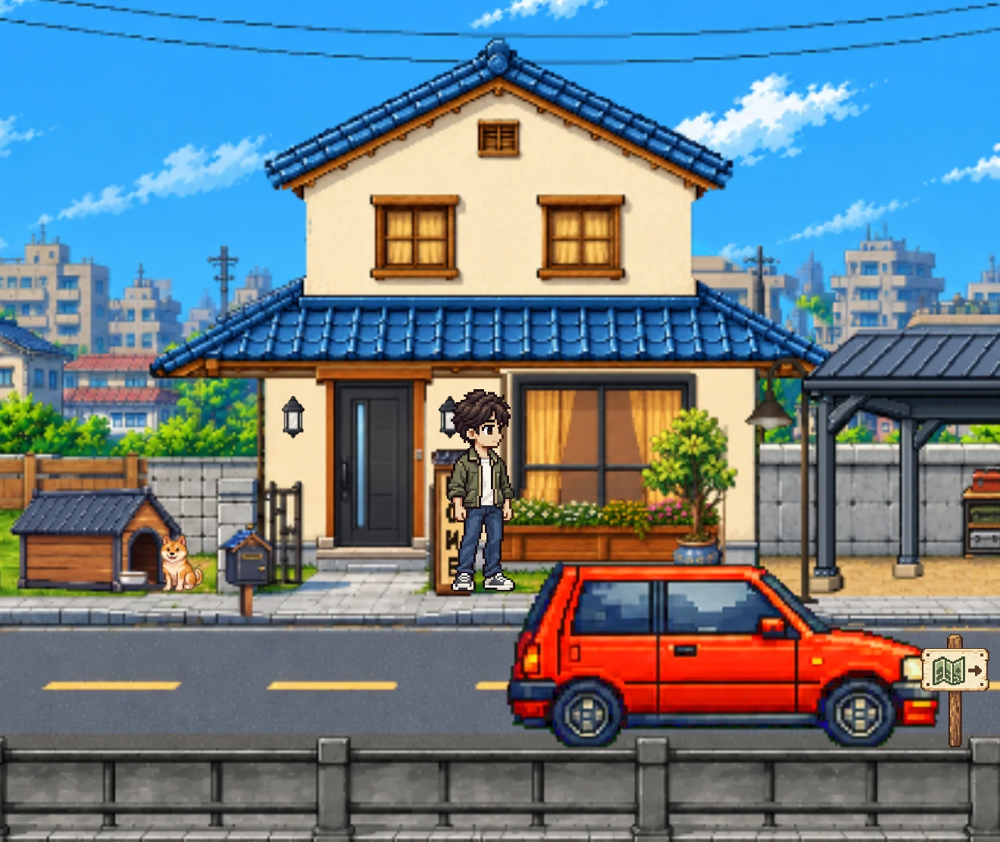
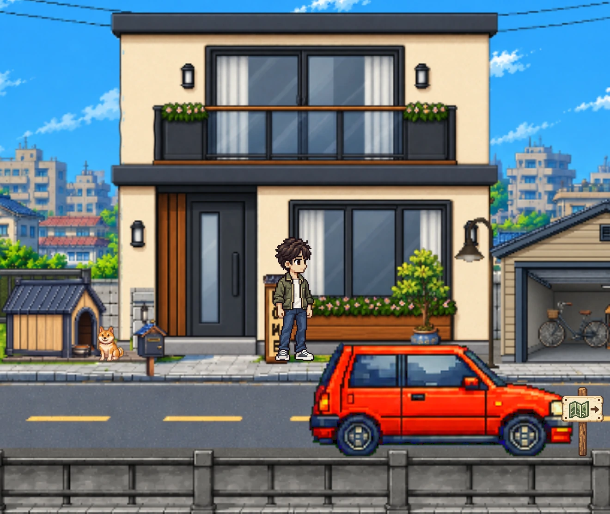
Focus Lock은 스크린 타임 권한을 받아 선택한 앱과 카테고리를 차단하는 선택 기능입니다. 1.0에서는 웹사이트 차단을 지원하지 않습니다.
잠금 화면의 Live Activity로 남은 시간을 확인하고 완료 알림을 받을 수 있습니다. 기기 지원과 알림 설정에 따라 동작이 달라집니다.
Free Drive는 시간 제한 없이 계속 무료입니다. 집중 보상은 지급되지 않습니다.
일본 풍경을 배경으로 한 Focus Drive를 누적 75분까지 무료로 체험할 수 있습니다. 이후에는 Focus Drive Pass를 한 번 구매해 계속 이용합니다. 구독·자동 갱신·체험 종료 후 자동 결제는 없습니다.
패스는 현재의 일본 배경 Focus Drive용입니다. 향후 추가 지역은 별도 구매로 제공될 수 있습니다. 현지 가격은 구매 전 App Store에서 확인해 주세요.
ZIP: 이미지·브랜드 자산·세 언어 언론용 문서·사용 안내. PDF와 영상은 개별 다운로드로 제공됩니다.
앱 UI는 한국어 실제 화면입니다. 풍경은 공통 자료이며, 화면은 서로 다른 촬영 장면입니다. WebP는 원본 화질을 유지한 무손실 파일입니다.
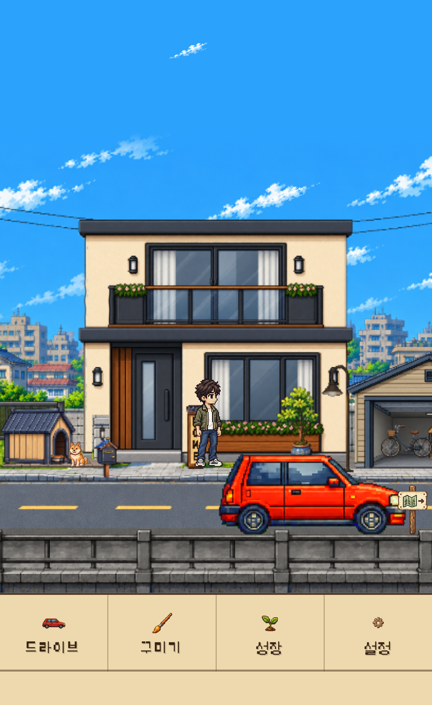
Home 메뉴WEBP ↓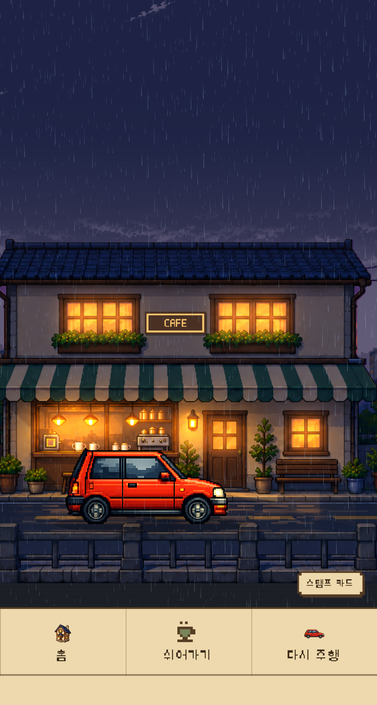
카페 메뉴WEBP ↓ 집중 시간 선택WEBP ↓Focus Drive와 타이머WEBP ↓
집중 시간 선택WEBP ↓Focus Drive와 타이머WEBP ↓공부·독서·작업 시간을 픽셀 드라이브로 채우고, 쌓인 집중으로 Home을 가꾸는 iPhone 집중 타이머.
Dayroad를 소개하는 기사·리뷰·영상·블로그에 제공 자료를 사용할 수 있습니다. 제품명과 화면을 오해하게 바꾸지 말아 주세요. 출처 표기 권장: Dayroad / Junho Kim. 별도 재판매·다른 제품의 자산으로 사용·음악 추출은 허용되지 않습니다. 그 밖의 용도는 문의해 주세요.
Dayroad 개발자